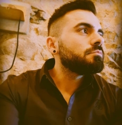

Gonçalo Caraça, 38 anos, nascido e criado na bela cidade de Évora. Filho de Pai motorista e
Mãe chefe de contabilidade,
foi criado com os seus 3 irmãos num ambiente muito simples, onde imperava o respeito e a
união.
Como toda a criança, sonhava ser jogador de futebol, desporto que praticou ao longo de toda
a sua vida, mas depressa se
apercebeu, que não faria do futebol vida, e aos 17 anos iniciou o seu percurso na área de
CNC, iniciando um curso de CNC
na empresa Tyco Electronics.
Curso terminado com sucesso e ótimos resultados, iniciou a sua vida profissional na área,
área essa na qual ainda
trabalha, passados 18 anos.
Mas nem tudo foi fácil, e aos 30 anos, com poucas oportunidades de trabalho em Portugal,
Gonçalo decide tentar a sua
sorte no estrangeiro, e emigra para a Alemanha.
Recém-chegado a um Pais desconhecido,
depressa encontra trabalho, e
entre trabalho e cursos, foi aperfeiçoando a língua e especializando-se mais na sua área
profissional, trabalhando com
diferentes tipos de máquinas CNC e várias linguagens de programação, foi um desafio muito
grande ter saído de Portugal,
mas ao mesmo tempo muito enriquecedor, o que o tornou uma pessoa melhor, tanto a nível
profissional como pessoal.
Curioso, dedicado e muito positivo, em 2019, abraça com todo o entusiasmo um novo projeto e
nova troca de país,
desloca-se mais para sul, para a Suíça, mais precisamente para Zurique, para trabalhar na
empresa de transportes
ferroviários Suíços, SBB, na qual permanece até aos dias de hoje.
Em 2020 em conversa com um amigo, toma conhecimento da Universidade Aberta, e decide que
ainda vai a tempo de concluir
uma licenciatura, objetivo esse que foi adiado em 2010, e entra no curso de Engenharia
Informática, com a ideia que
poderia ser uma mais-valia para as suas funções atuais, não tendo como objetivo migrar de
área.
Mas em que em 2021, obra do acaso ou talvez não, depois de uma grave lesão no joelho,
enquanto praticava futebol, é sumetido a 3 operações cirurgicas num curto espaço de tempo, e fica com algumas limitações físicas que o
impediram, a médio longo prazo, de
exercer a sua atividade profissional.
Como pessoa lutadora e ambiciosa que é, Gonçalo aceita a sua nova realidade e rapidamente
redireciona todos os seus
esforços para a licenciatura que se encontra a frequentar, e migrar de área, que a princípio
nem sequer seria uma opção, passou a
ser o seu principal objetivo.
Atualmente encontra-se no 3º Ano da licenciatura, ainda a tentar descobrir o seu caminho
numa nova área, muito exigente
e desafiante, com uma única certeza, tudo irá corre bem.